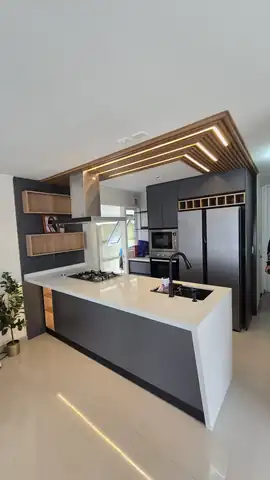
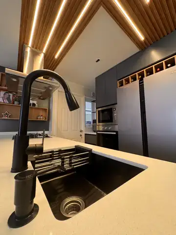

Una cocina que combina contraste, luz y funcionalidad
Cocina a medida en Puerto Montt con isla central, mobiliario oscuro, superficie clara y un cielo de listones con iluminación cálida que define el espacio.
Un diseño con carácter sin perder comodidad de uso
La composición se organiza alrededor de una isla central que amplía la superficie de trabajo y crea una relación directa con el área social. Los frentes oscuros aportan profundidad, mientras la cubierta clara y la iluminación cálida equilibran el conjunto.
El cielo de listones y las líneas de luz integradas entregan una identidad clara al proyecto y ayudan a separar visualmente la cocina sin cerrarla.

La isla organiza el espacio y multiplica sus usos
La isla funciona como superficie de apoyo y como punto central de la cocina. La disposición perimetral concentra almacenamiento y equipamiento, manteniendo libre el área de circulación.
- Superficie central amplia para preparación y apoyo.
- Módulos altos y bajos para aprovechar el volumen disponible.
- Contraste entre frentes oscuros, blanco y textura de madera.
- Iluminación integrada que aporta calidez y profundidad.
Terminaciones que elevan el resultado
Las fotografías corresponden al proyecto real y permiten apreciar de cerca las decisiones de mobiliario, iluminación y equipamiento.


¿Tienes un proyecto en Puerto Montt?
Envíanos fotos del espacio, tu comuna y una idea de lo que quieres conseguir. Podemos orientarte desde el diseño hasta la instalación.